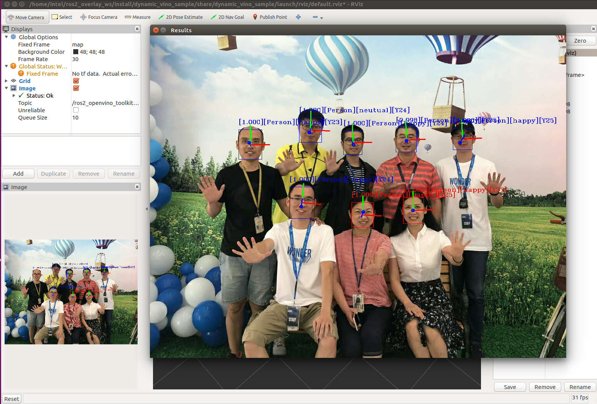

1. Overview
The OpenVINO™ (Open visual inference and neural network optimization) toolkit provides a ROS2 compatible runtime framework of neural network which quickly deploys applications and solutions for vision inference. By leveraging Intel® OpenVINO™ toolkit and corresponding libraries, this runtime framework extends workloads across Intel® hardware (including accelerators) and maximizes performance.
* Enables CNN-based deep learning inference at the edge.
* Supports heterogeneous execution across computer vision accelerators—CPU, GPU, Intel® Movidius™ Neural Compute Stick, and FPGA—using a common API.
* Speeds up time to market via a library of functions and preoptimized kernels.
* Includes optimized calls for OpenCV and OpenVX.
2. Running the demo
* Preparation
download and convert a trained model to produce an optimized Intermediate Representation (IR) of the model
source /opt/intel/computer_vision_sdk/bin/setupvars.sh
export LD_LIBRARY_PATH=$LD_LIBRARY_PATH:/opt/intel/computer_vision_sdk/deployment_tools/inference_engine/samples/build/intel64/Release/lib
* Connect Intel® Neural Compute Stick 2 to USB port of system
run face detection sample code input from standard RGB camera.
source /opt/robot_sdk/robot_sdk_setup.bash
ros2 launch dynamic_vino_sample pipeline_people_myriad.launch.py
run object detection sample code input from RealSense™.
source /opt/robot_sdk/robot_sdk_setup.bash
ros2 launch dynamic_vino_sample pipeline_object.launch.py
Please refer to here for more usages.
3. Key Interfaces
Subscribed Topic
* Image topic: /openvino_toolkit/image_raw(sensor_msgs::msg::Image)
Published Topic
* Face Detection: /ros2_openvino_toolkit/face_detection(object_msgs::msg::ObjectsInBoxes)
* Emotion Recognition: /ros2_openvino_toolkit/emotions_recognition(people_msgs::msg::EmotionsStamped)
* Age and Gender Recognition: /ros2_openvino_toolkit/age_genders_Recognition(people_msgs::msg::AgeGenderStamped)
* Head Pose Estimation: /ros2_openvino_toolkit/headposes_estimation(people_msgs::msg::HeadPoseStamped)
* Object Detection: /ros2_openvino_toolkit/detected_objects(object_msgs::msg::ObjectsInBoxes)
* Object Segmentation: /ros2_openvino_toolkit/segmented_obejcts(people_msgs::msg::ObjectsInMasks)
* Rviz Output: /ros2_openvino_toolkit/image_rviz(sensor_msgs::msg::Image)
Service
* Object Detection Service: /detect_object(object_msgs::srv::DetectObject)
* Face Detection Service: /detect_face(object_msgs::srv::DetectObject)
* Age & Gender Detection Service: /detect_age_gender(people_msgs::srv::AgeGender)
* Headpose Detection Service: /detect_head_pose(people_msgs::srv::HeadPose)
* Emotion Detection Service: /detect_emotion(people_msgs::srv::Emotion)
face detection input from image 
object detection input from RealSense™

object segmentation input from video

Person Reidentification input from standard camera

4. Known issues
--
5. ToDo
* Support result filtering for inference process, so that the inference results can be filtered to different subsidiary inference. For example, given an image, firstly we do Object Detection on it, secondly we pass cars to vehicle brand recognition and pass license plate to license number recognition.
* Design resource manager to better use such resources as models, engines, and other external plugins.
* Develop GUI based configuration and management tools (and monitoring and diagnose tools), in order to provide easy entry for end users to simplify their operation.